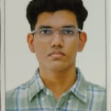

Bachelor of Technology
Computer and Communication Engineering (CCE)
Manipal
MY PERSONAL PROFILE
B.Tech CCE student at Manipal.
An engineering student with a creative side. Alongside my studies, I enjoy drawing and editing as ways to express my ideas.
Get to know me
01 / INTRODUCTION
I’m Rayaan Mohammed, pursuing a B.Tech in CCE at Manipal.
My interests bring together engineering and creativity. Outside my coursework, I enjoy drawing and editing, making time to explore ideas and express myself through creative work. This page shares a little of my academic journey and personal interests.
02 / MY JOURNEY
Computer and Communication Engineering (CCE)
Manipal
03 / TOOLKIT
Technical and creative skills I’m developing alongside my studies:
04 / BEYOND THE CLASSROOM
Drawing and editing are my favourite creative interests outside the classroom.
I enjoy exploring ideas through drawing and bringing a personal touch to my work through editing.